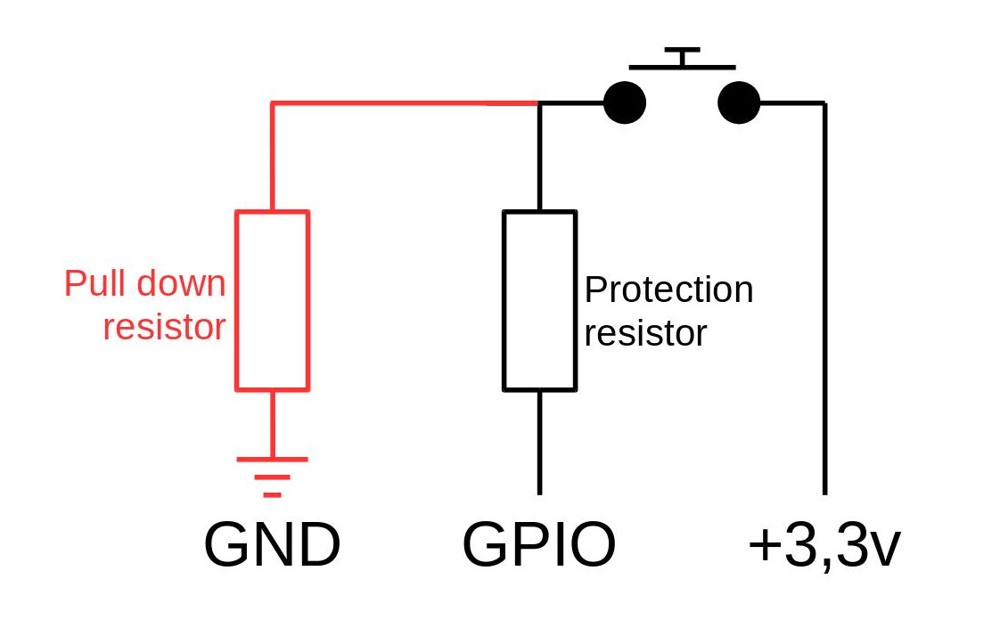

Connecting a push button switch should be an easy thing but it's harder than it seems. There are two main concerns to be solved: undefined state and switch bounce.
Pull Down/Up resistor
The first concern regarding a push button switch is that its status is not clearly defined because the circuit is not closed. It is susceptible to random electromagnetic radiation or static from you, from any devices near or far and from the environment. Any wires attached to the GPIO ports act as antennae.
To prevent this, it is common to use pull-up or pull-down resistors to get it under control. Fortunately, the Raspberry Pi has built-in pull-up and pull-down resistors which can be enabled in software.
N.B.: the protection resistor (1Kohm) is only to limit damage if the GPIO is set, by error, in output mode.
Pull Down
In this following circuit, a resistor is used to “pull-down” the voltage. In other words, the GPIO is connected to the ground and its default state is LOW, 0, or False.

Then, the code below allows to configure the GPIO as an input with the pull-down resistor:
GPIO.setup(18, GPIO.IN, pull_up_down=GPIO.PUD_DOWN)
Pull Up
In this following circuit, a resistor is used to “pull-up” the voltage. In other words, the GPIO is connected to the 3,3V and its default state is HIGH, 1, or True.
Then, the code below allows to configure the GPIO as an input with the pull-up resistor:
GPIO.setup(18, GPIO.IN, pull_up_down=GPIO.PUD_UP)
Switch bounce
The second concern regarding a push button switch is that it often generates spurious open/close transitions when pressed, due to mechanical and physical issues. These transitions may be read as multiple presses in a very short time fooling the program. This is as a result of what is known as 'switch bounce'.
There are two ways of dealing with switch bounce: add a 0.1uF capacitor across your switch or software debouncing.
The software debouncing strategy is really simple: checking twice in a short period of time to make sure the push button switch is definitely pressed.
GPIO.add_event_detect(18, GPIO.BOTH, callback=CallbackFunction(), bouncetime=200)